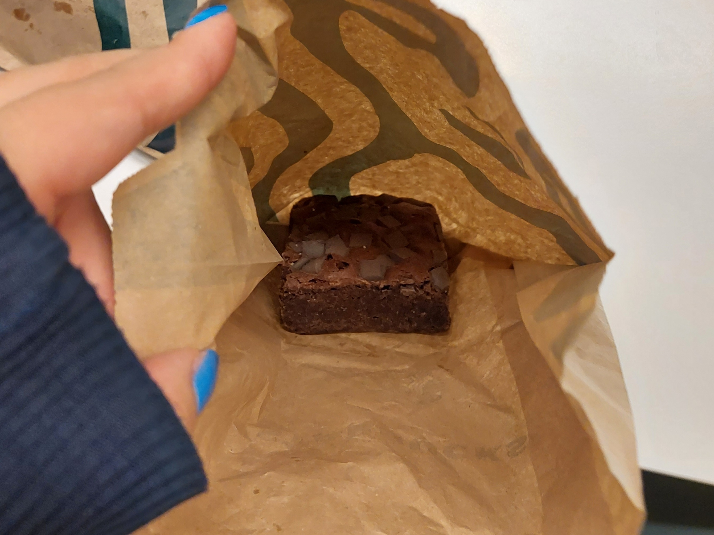
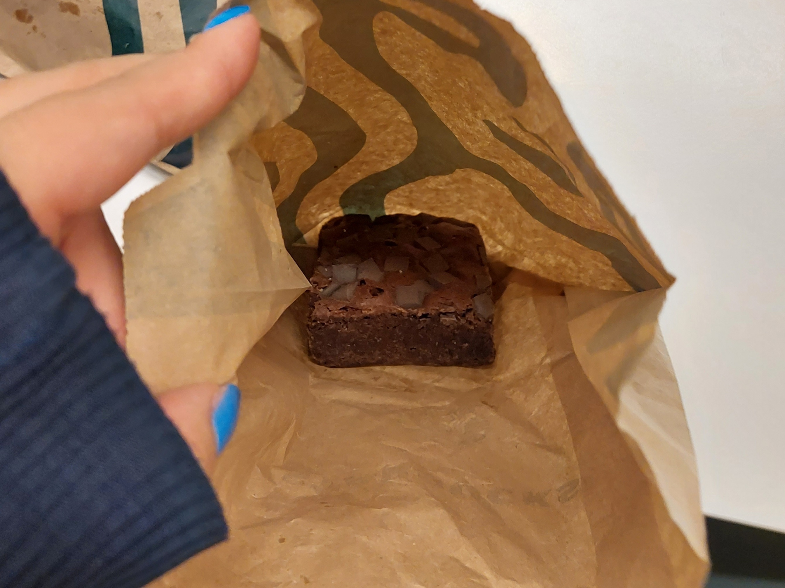

mijn ervaring


 

verrassingspakket
€12
naar €4
Ik heb bij de Starbucks een too good to go pakket gehaald bij de Utrechstestraat in Amsterdam. Het was redelijk soepel gegaan. In de app kan je zoeken wat je wilt. Er is een grote variatie aan keuze bijvoorbeeld supermartken zoals dirk en aldi, maar ook sushi of dunkin donuts en in mij geval dus starbucks. Deze dingen zijn vaak wel uitverkocht, soms moet je even opletten. Gelukkig staat er bij sommige plekken wel wanneer je weer opnieuw kan checken. Met 1 klik heb je iets al gereserveerd en wanneer het tijd is om het op te halen loop je gewoon naar binnen en laat op je telefoon zien dat je een tgtg pakket hebt gereserveerd. In sommige gevallen is het al ingepakt, maar bij mij werd het gelijk ingepakt.
Ik heb 2 croissants, pain au chocolat en een brownie gekregen. Het was allemaal nog goed en lekker, dus voor 4 euro vond ik het een best redelijk deal en zou ik het wel vaker doen.